Marines 2004

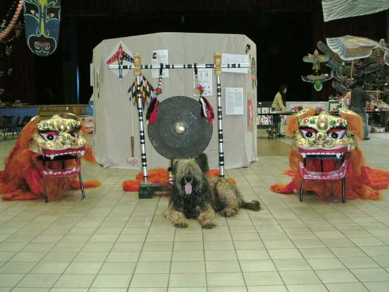
Marines, festival orienté Extrême-Orient (Inde et Chine) et "combattants". Dans la semaine, peu de vols mais une exposition en salle, beaucoup d'ateliers pour les écoles et des démonstrations/ateliers de construction par des maîtres du bambou : pour les combattants Abdul, Ludo et Dom, aidés par Karine et Emmanuel. Pour les oiseaux chinois en bambou et soie, surtout des aigles, peints à la main : Wang Zhushan. Abdul et Wang Zhushan ne parlent pas français, ce qui est classique, ni anglais, ce qui rend la communication assez délicate ! Mais, sur les ateliers, on se débrouille toujours, avec les mains et quelques mots : "ici, grôs, grôs, là, petit, petit, petit...", "same, same" (= les deux cotés bien pareils) et "OK, OK, OK" ou le fatidique et redouté "no OK" : le maître prend son cutter et pourfend le patient travail de la dernière heure, dissymétrique de 2 mm. Alors vous recommencez, mais vous soignez bien le "same, same"...

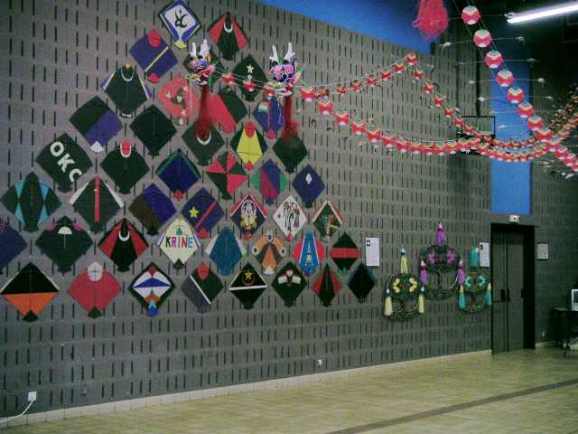
L'exposition : une splendide collection de combattants modèle Compétition (un peu plus grand que le modèle d'entraînement classique).

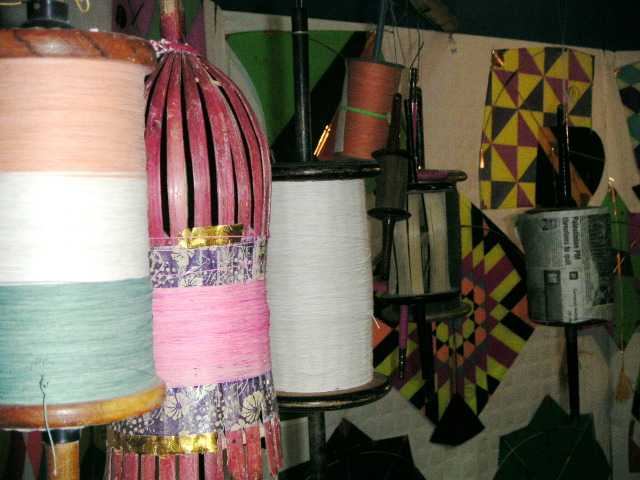
Des dévidoirs (de combat) de toutes formes et couleurs, presque des oeuvres d'art en bois sculpté ou en bambou assemblé.

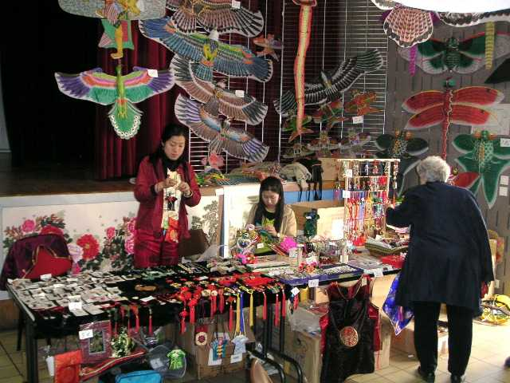
Des aigles et divers articles de Wang Zhushan et ses filles (vous savez, le "Magic" à Brie...).

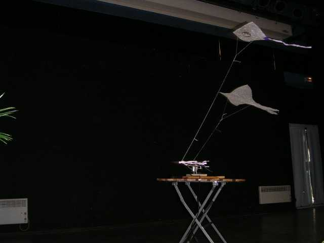

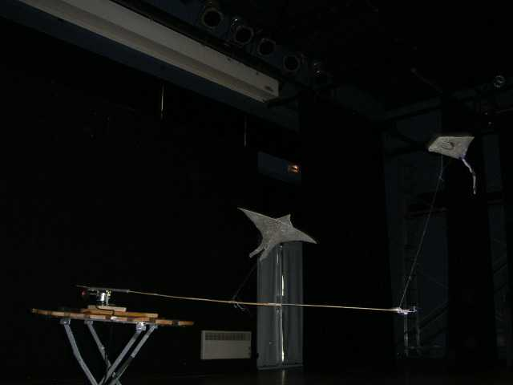
Des gadgets amusants par des gens pleins d'imagination, comme un manège qui fait voler des CVs ultra légers,

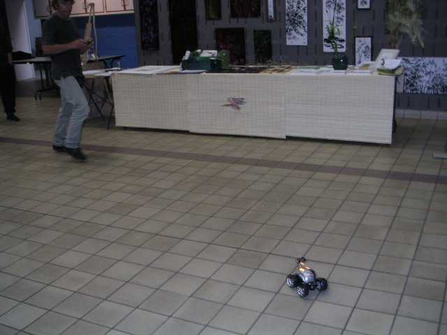
ou une voiture télécommandée qui traîne aussi un petit cerf-volant.

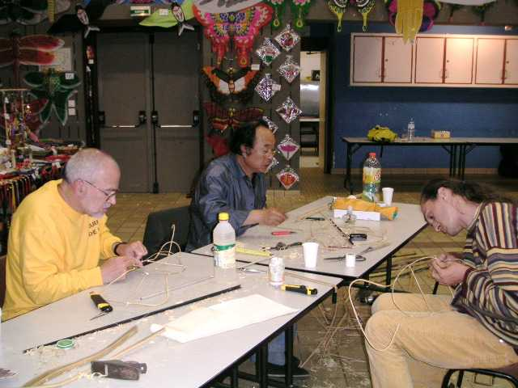
Faisant partie de l'expo, un atelier de construction chinoise (bambou retaillé, courbé à la lampe à alcool, collé et ligaturé, puis tendu de soie). La peinture, ce sera pour plus tard, mais si on peut avec du soin et de la patience construire des imitations avec les techniques apprises, la peinture nécessite un coté artistique difficile à enseigner, et on ne peut pas risquer de gâcher le travail laborieusement accompli.

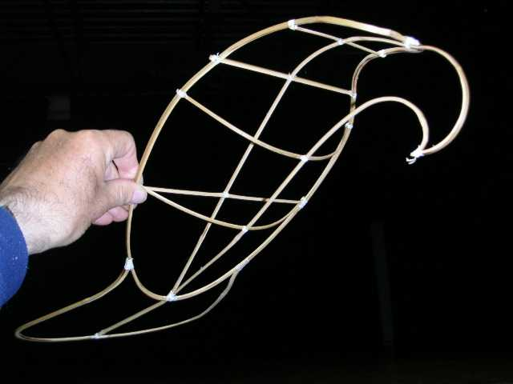
Mais quelle satisfaction quand le corps prend forme (faut quand même 2 jours de travail pour atteindre ce stade...).

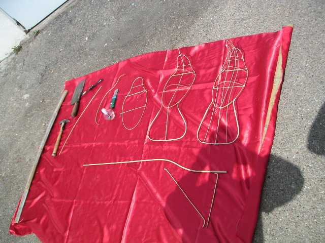
Voilà regroupés, à gauche, quelques outils : le marteau et la serpe, pour fendre le gros bambou de gauche au départ, la lampe à alcool pour courber les baguettes produites. A droite, différents stades de réalisation de la structure : en haut le corps et, en bas, l'aile (encore incomplète vers la gauche, et non assemblée).

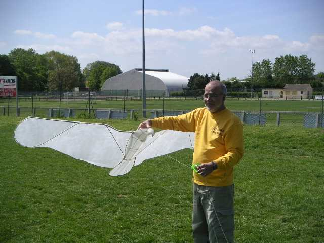
Enfin, tout est assemblé et entoilé. Une bride chinoise monopoint, et c'est le Lancement... Le vol d'un aigle de Wang Zhushan est assez particulier : il cabre bien tant qu'il est en pression, comme un cerf-volant normal. Mais dès qu'on relâche, il se met à plat et éventuellement commence à spiraler, ce qui entraîne l'enthousiasme général. Un peu déroutant pour nous, d'autant que le réglage de l'équilibre est assez délicat à trouver et que, par vent faible, on n'arrive pas à monter, voire à contrôler, l'aigle se remettant constamment à plat ! Travail à poursuivre...
Arrive le week-end !

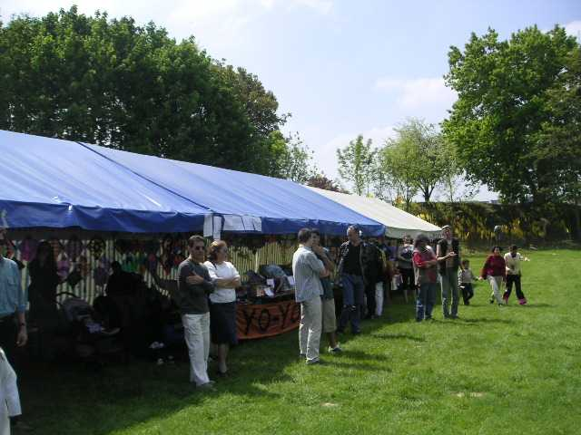

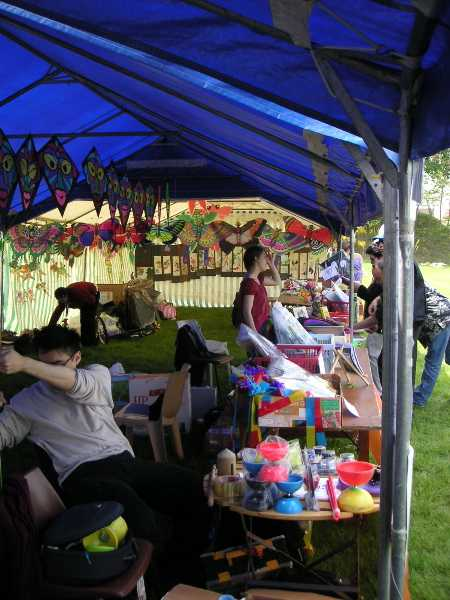
On ferme les ateliers, on sort tout sous les tentes, et on va voler.

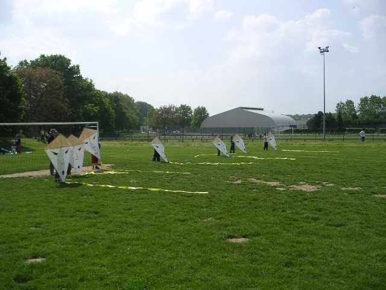
Le vol, c'est d'une part le vol classique, général : depuis les fameux aigles aux Eddies des enfants, en passant par le dragon de 40 mètres, des "combattants statiques" stabilisés par une queue et un réglage ad hoc, des vols de groupe comme les cerfs-volants "tête de chinois" (drivés par les représentants de Hurricane avec chapeau chinois et masque de théâtre chinois), etc.

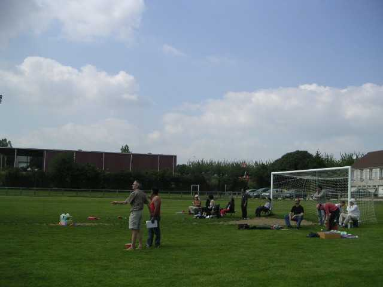
D'autre part, les combats à la manjha coupante, car on est chez Ludo, dans le temple du Manjha Club. Donc combats selon les règles, avec arbitre, sifflet, et chronomètre. Ils ont lieu à part, et même très à part, dans le stade d'à coté, mais quand même pas assez à part (deux monofils coupés !) ; et alors, savez-pas faire des noeuds ? Mais tout se passe dans un climat de bonne entente, où les accidents sont une fatalité inévitable et qu'il faut prendre comme ça.
Finalement, pot et remise de cadeaux chinois et indiens aux autorités qui pourront pratiquer dès qu'elles en auront le temps...

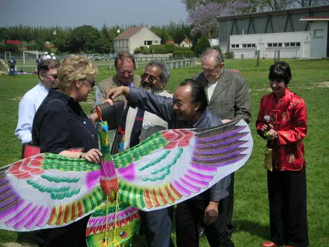